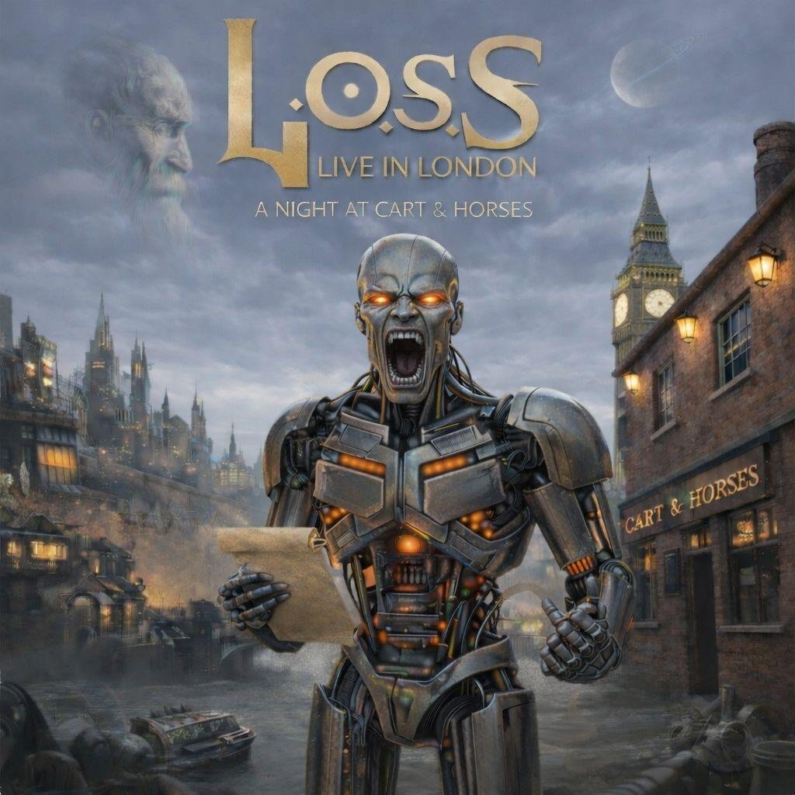
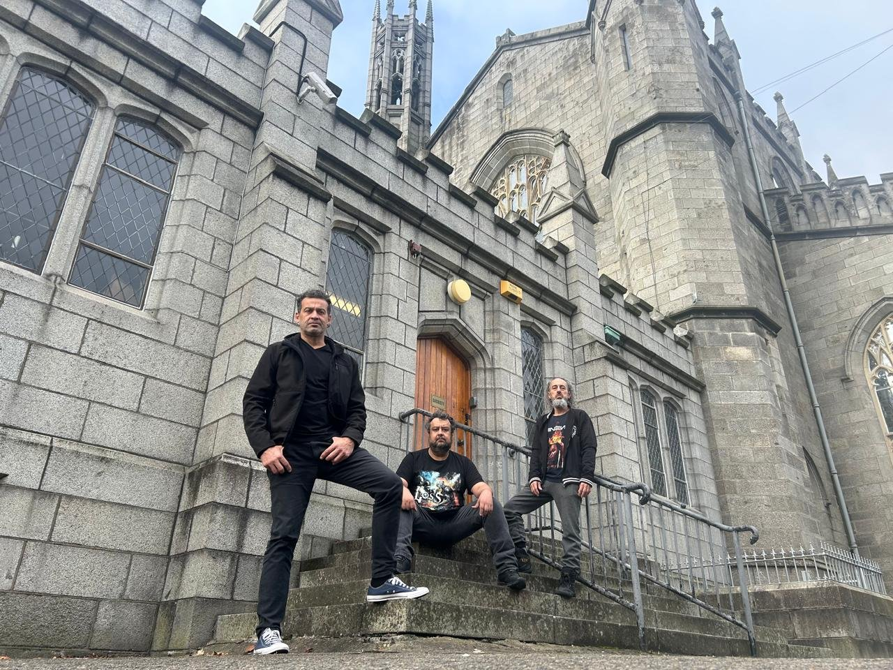
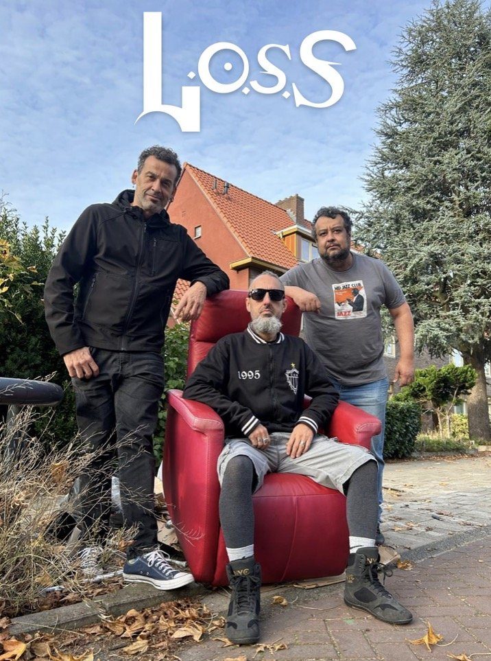

Belo Horizonte, Brasil — DyMM Records
Riff pesado, raiz mineira, estrada europeia.
Loss é o power trio de stoner rock que carrega a força do clássico dos anos 70 para os palcos do Brasil e da Europa — e acaba de gravar um álbum ao vivo no mesmo pub londrino onde o Iron Maiden começou.
Três músicos, um som que não pede desculpas.
Fundada em 2020 em Belo Horizonte (MG), a Loss reúne o vocalista e baixista Marcelo Loss, fundador da banda Concreto, o baterista Teddy Bronsk, um dos nomes do lendário Witchhammer, e o guitarrista Adriano Avelar, com passagem pela Caxakustica. Juntos, tocam um rock que bebe do stoner, do hard rock e do metal clássico sem se prender a fórmulas.
A referência é a mesma que formou o gênero: Black Sabbath, Deep Purple, Rush e Van Halen aparecem nas camadas de guitarra e no groove do baixo, misturados a temperos da música brasileira. Em pouco mais de um ano de estrada, a banda já teve música tocada em veículos de mais de vinte países.
Desde 2021 a Loss integra o cast da DyMM Records, gravadora europeia com sede em Londres e Lisboa, o que abriu caminho para turnês pela Espanha, Portugal e Reino Unido — incluindo a noite que virou o álbum ao vivo mais recente da banda.
- Formação
- 2020, Belo Horizonte — MG
- Integrantes
- Marcelo Loss — voz e baixo
Adriano Avelar — guitarra e vocais
Teddy Bronsk — bateria - Selo
- DyMM Records (Londres / Lisboa)
- Influências
- Black Sabbath, Deep Purple, Rush, Van Halen
Quatro capítulos, do estúdio em BH a um pub em Londres.
-
2020
Let's Go EP
Estreia de quatro faixas autorais, gravada no Estúdio Riff (BH) e com mixagem e masterização do produtor dinamarquês Tue Madsen, que já trabalhou com nomes como Rob Halford e Meshuggah.
-
2022
Storm Álbum
Primeiro álbum de estúdio e primeiro lançamento pela DyMM Records. Onze faixas em português e inglês, gravadas no Analog Dream Studio (BH) e mixadas em Atenas, na Grécia, por Jim Siou.
-
2024
Human Factor Álbum
Segundo álbum, sobre o atrito entre o humano e a máquina. Gravado no Analog Dream Studio e mixado por Tue Madsen na Dinamarca, foi apresentado em um evento fechado na loja Woodstock, em São Paulo.
-
2026
Live in London A Night at Cart & Horses — Ao vivo
Registro ao vivo gravado no Cart & Horses, o pub de Londres onde o Iron Maiden se apresentou no início da carreira. A Loss se torna uma das poucas bandas brasileiras a levar seu som pesado para esse endereço.
O que estão dizendo sobre a Loss.
Mídia nacional
- Site oficial da Loss lossband.com
- Loss lança álbum "Storm", primeiro pelo selo europeu DyMM Records roadiecrew.com
- Sonoridade calcada no stoner, com referências a outros subgêneros do peso whiplash.net
- Loss no YouTube youtube.com
- O fator humano por trás do peso: maturidade, estrada e resistência headbangersbr.com
Europa, uma cidade de cada vez.


L.O.S.S — The Human Factor Tour
Um beat 'em up 2D em que Robustus, um ciborgue construído a partir das próprias músicas da banda, enfrenta o Metrônomo Executor num bar de Belo Horizonte. Feito em HTML5 Canvas, roda direto no navegador — sem instalar nada.
Jogar agoraA loja de merchandising está a caminho.
Camisetas, vinis e itens do álbum "Live in London" chegam em breve. Deixe seu e-mail e avisamos assim que a loja abrir — sem spam, só rock.
Shows, imprensa e parcerias.
Para agenda de shows, entrevistas e imprensa, escreva direto para a banda ou siga nas redes.